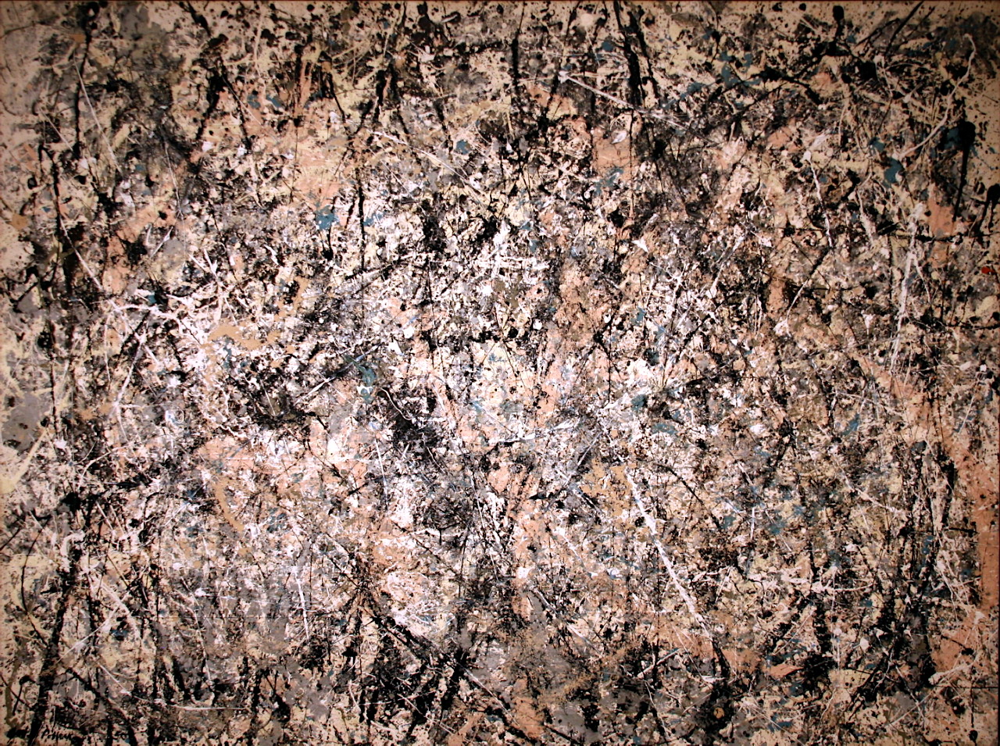
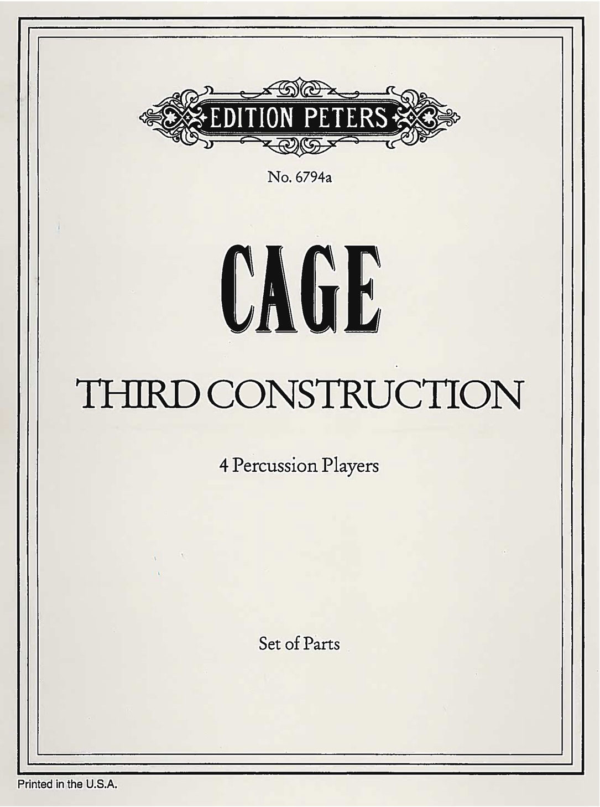
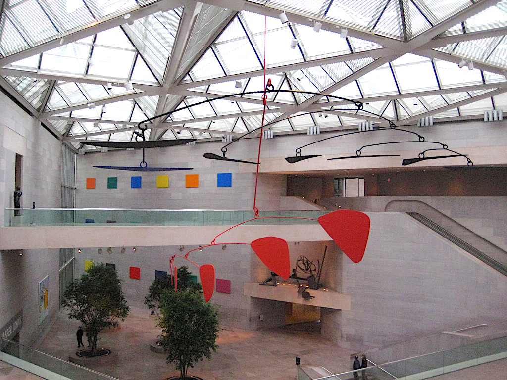

Loading...
1. Henneman
New discoveries that really matter to me #1
"What’s on?" I asked the guy behind the counter, "Elza Soares ‘The woman at the end of the world'. You like it? Want to have it?"
Entering Concerto Amsterdam in the spring of 2018. In the 42 years I have lived around the corner I step into this paradise regularly, occasionally to buy new releases but also for a good coffee. That day I was struck by the music that was on in the shop. The voice unpolished, male, female? Sounded like a strange mix of music: Björk, the Ex, samba music, electronic music, beats, language Brazilian? "What’s on?" I asked the guy behind the counter, "Elza Soares ‘The woman at the end of the world'. You like it? Want to have it?" And with one click my fascination was demolished. It seemed to be the last copy in the house…so the music stopped and came home with me.
I listened to the album many times, a renewed experience that summer. The periods when writing music I listen less at home. What a beautiful impeccable album of 40 minutes of music it is. Elza Soares in her eighties, singing with a soul, totally dedicated to the lyrics, singing with a vital, sexual and spiritual energy. I could not mention one favorite track, because it is shaped like an album -- one likes to listen to the whole story.
I had never heard of her before, and just because of this gorgeous project of Guilherme Kastrup, that culminated in ‘Mulher Do Fim Do Mundo' that was on in Concerto, she entered into my life. Elza Soares is an icon in Brazil. She was thé samba queen as I understand (though it is not my expertise at all). She uses her voice in her own way. She says she was influenced by Louis Armstrong, his way of singing. For me, she is a new inspiration. I even dared to sing ‘Comigo’ in Portuguese, the end of the album, to close one of my solo concerts.
It seems that Elza had been in the Netherlands with this repertoire just before I discovered her, so I missed the chance to hear her live. Music producer and drummer Guilherme Kastrup created a team around him who delivered the lyrics, the music, the arrangements. All from a different generation than Elza. Together with her, they created this well-documented album, released on Mais Um Discos in 2016.
It is so great to have new discoveries that inspire and stay with you for a long time.
Video: Coração Do Mar
Video: Mulher do fim do mundo
Video: Maria Da Vila Matilde
More from Ig Henneman
Feather-Light Monkeys for three bass clarinets – Bimhuis 29 January/2016
Ig Henneman Sextet 'Light Verse' – Bimhuis Amsterdam 19 December 2010
2. Vandermark
Changing Tires
From my standpoint, the most essential work always comes from artists who have been willing to, as Jones puts it, "reinvent the wheel"
In the previous issue of Catalytic Quarterly (edition 4, from January 2019), I quoted the following statement made by the artist, Kerry James Marshall:
"The revision of any kind of established model is always a political act." from "Kerry James Marshall, Boldly Repainting Art History," by Randy Kennedy, The New York Times, Sept. 9, 2016.
On May 29th of 2018, I was lucky enough to interview Bonnie Jones after her brilliant solo concert on the Option series, held at Experimental Sound Studio in Chicago. The discussion was extraordinary and filled with her ideas. One of many that still resonates with me is the following:
"The second bad thing [I heard in grad school] was someone who said, 'Why are you trying to reinvent the wheel?" I took that to be a question of why I wanted to create forms that weren't already well established. And the thing that kind of bummed me out about that was this assumption of 'the wheel' being preferable. But what is 'the wheel'? Who created it and for whom? Should we assume that people should be following, whatever 'the wheel' is? And that somehow some kind of idiosyncratic figuring it out on your own is not appropriate in thinking about what your music practice could be for you."
Connected to these trains of thought, but from a book that might not initially come to mind regarding the political engagement of artists, written by Chantal Mouffe:
"Envisaged as counter-hegemonic interventions, critical artistic practices can contribute to the creation of a multiplicity of sites where the dominant hegemony can be questioned. In my view, those who work in the field of art and culture belong to the category of what Gramsci calls 'organic intellectuals'."["Agonistics: Thinking the World Politically" (Verso: 2013), pg. 104.]
And now a point of view from someone who would fall under the category Mouffe and Gramsci describe as "organic intellectuals":
"You have to change to stay the same."-Willem de Kooning, "Between Sense and De Kooning" (Reaktion Books: 2011), written by Richard Shiff, pg. 255.
For me, the power of these statements lies in the way they indicate that the individual thinking, research, and work of an artist can be understood as political without necessarily becoming dogmatic. The key throughout each is an inquiry about and interrogation of the "dominant hegemony". I believe that this dominant hegemony can be understood as directly political in the case of Mouffe; cultural and political in the case of Marshall and Jones; and personal, in the case of de Kooning. The point is that in each case, the individuals speak eloquently and in their own terms about the need to challenge the paradigms placed in front of them. From my standpoint, the most essential work always comes from artists who have been willing to, as Jones puts it, "reinvent the wheel".
This reinvention can be forms-based, as Jones describes. It can be a challenge to the art/music history status quo, as in the case of Marshall. I read de Kooning's statement as a reference to why it’s necessary for an artist to keep changing their work in order for it to retain its creative and investigative edge. Without question, the artists, musicians, and writers I admire most have altered the paradigm to varying degrees, in some cases removing the “the wheel” completely [such as Chantal Akerman, Tarsila do Amaral, Derek Bailey, Bernd and Hilla Becher, Samuel Beckett, Ornette Coleman, Merce Cunningham, Marcel Duchamp, Eva Hesse, Helen Frankenthaler, Robert Irwin, Abbas Kiarostami, Maggie Nelson, Hélio Oiticica, Gordon Parks, Walid Raad, Éliane Radigue…].
My hope is that by reading this short article, the reader will be motivated to examine the work of Kelley James Marshall, Bonnie Jones, Chantal Mouffe, and Willem de Kooning in depth. And if, like me, they are also involved with their own creative activity, they will be encouraged to revise an established model, reinvent a wheel, create multiplicity, and change to remain the same. Because in each of these cases and with their own methods, Marshall, Jones, Mouffe, and de Kooning helped to invent something that didn't exist in the same way before them. That's more than a cultural contribution, it's a statement about being an individual in response to the status quo. And that's political.
For more information about Kerry James Marshall, Bonnie Jones, Chantal Mouffe, and Willem de Kooning, here’s a start:
Kerry James Marshall (artist talk)
Kerry James Marshall (digital exhibit)
Bonnie Jones
Chantal Mouffe
Willem de Kooning
-Ken Vandermark, Chicago, 2/28/19
3. Harnik
Improvisational Re-Assemblies
Excerpt from: "Elisabeth Harnik/Improvisational Re-Assemblies" in Gerhard Nierhaus: Patterns of Intuition, Musical Creativity in the Light of Algorithmic Composition, Springer-Verlag, Vienna, 2015.
As a composer and improviser I am in a permanent dialogue with my own repertoire and the associated possibilities of structuring time. This way of dedicated awareness of the material constantly accompanies my artistic process. The following excerpt is from a text contribution I wrote for a book which was the result of a research project led by Austrian composer Gerhard Nierhaus, who had invited me to take part. The three year research investigated the creative act of composing by means of algorithmic composition. Central to the investigation were the compositional strategies of 12 composers, which were documented through a dialogic and cyclic process of modelling and evaluating musical materials. In my case we wanted to focus on my strategies as a composer-performer.
Statement
The nautilus is a nomad which explores the oceans on its vast journeys. It collects particles of each investigated place to build its shell, becoming a sort of collection of its explorations. Every year the shell forms and adds a new chamber. The old chamber is sealed and the animal moves into the new chamber…
I see parallels in my artistic work as a composer and improviser to the journey of the nautilus. In both disciplines of composition and improvisation there is a drive for me to obtain something “new” within a particular framework of conditions and thus to extend the boundaries. As a professional pianist and improviser,my hands have acquired a rich repertoire of gestures. This is further refined, extended or also revised by regular frequent practice and reflexion. It can be described like a ritual: from a state of alert curiosity, in which some decisions are consciously left up in the air, I let myself be guided by the expectation of what will come. I have an attentive anticipation of the possible outcome, but one which can still remain foreign or strange to me. It is like while playing, something can spontaneously occur which is new to the previous context. Hand and ear “localise” the incident and almost “anticipate” the foreign element. I then take this new engagement on with a readiness to take a risk and follow it up.
When composing I also choose certain working methods, which make me follow up particular musical incidents spontaneously. Mostly, I do not know which result will come from it, but that is what constitutes the excitement in both disciplines. They are only differing ways to obtain a soughtafter “new”. I consider composing and improvising as a kind of interplay between the calculated and the inconceivable: a reflexion about a developed sound vocabulary—be it via preconceived of spontaneous interventions—and a tracing of an unconscious inner structure.
Personal Aesthetics
Whether I write a piece in the conventional sense or I play an improvisation, both are highly complex creative processes. I like to put improvisation and composition as counterparts to each another, and the discussion often ends up being a kind of power struggle or trial of strength where either the one or the other loses. For me however both composition and improvisation represent a complex interplay of activities, which assigns meaning to musical material—I appreciate both disciplines because I can reach something with both different creative methods. The possibility to move freely along the time-line when writing, to later exchange what’s already written with new findings and insight—to let this influence future sections back in the beginning— leads to a completely different approach compared to the linear time structure of an improvisation. On the contrary the challenge of improvisation lies precisely in the brilliance of the moment since no posteriori correction is possible. The role of listening is crucial, which transfers and takes me into a state of subtle presence. Everything that is heard—the carrier of information and relation—is composed or made up of sudden, imminent direct sensory perceptions and sensations, or of a pensive leaning towards old experiences and intuitive presumptions.
In my work as an improviser I meet musicians from all different musical backgrounds. My personal aesthetic is based on a repertoire, which I have collected over many years in my improvisation and composition practice. It is affected by my cultural heritage and education and also by international and intercultural collaborations with performers of various musical genres. Contemporary music, jazz, electronicmusic, rock music and Indian music have crucially influenced my handling of aesthetic preferences. Improvised music is an artistic area that is influenced by different approaches and positions. I would call my aesthetic as an improviser “integrative” rather than anything else. It is impossible to deny my central-European heritage—nevertheless I observe, especially in my practice as an improvisation artist, that by the exchange with musicians of other cultures and different genres I am repeatedly encouraged to consider the often unconsciously adopted concepts of western avant-garde art and music. This implicates that I allowa pluralistic point of viewin the aesthetic of my improvisation, but of course, there are always boundaries.
Improvisation occurs often as a collaborative act. In my opinion this requires one to be open to “foreign” aesthetics and to be ready to leave behind your own preferences. I would go even further and say that in a group improvisation the group sound, respectively the form of the moment takes primacy over the aesthetic of the individual members. In a group improvisation the various kinds of information processing change. Separated and sequential linear sound vocabulary—with or without a preconceived system—is combined with non-linear, presently sounding, imagined or remembered information.
When composing conventionally or in a solo improvisation, the dimension of the collective nuance is of course missing, which is so eminently important in a group improvisation. I alone am the “author/originator/creator” of my actions. Nevertheless I often manage also to take on a multiperspective when composing or playing solos, which allows a plurality of discourses to happen simultaneously, whose individual layers can arbitrarily interrupt each other or respectively pass into fore- or background.
Formalisation and Intuition
Each composition and improvisation carries within a certain interrelation between “interpretation” as formalisation and “spontaneity” as intuition. It is therefore interesting as a composer and improviser to gain within this respective framework something “new”. In recent times, when I compose with pen and paper, I work increasingly with patterns, which I formulate as a form of basic configuration of sounds, which react, to different filter processes. For the filter processes, which blend in and out the sound and motion patterns I use mostly rigid rulebased systems like cellular automata.
The almost automatic execution of the rules allows me to react intuitively to the emerging body of sound. Unexpected musical situations often arise for me, which can significantly change the course of a composition, or sound qualities detach themselves from the initially formulated pattern, sound qualities which were not yet determined at the beginning of the composition process. It is an integrative process in which forgetting the rules of a system play an important role since otherwise no change, no transformation is possible. The moment of the sudden “neglect or oblivion” in order to follow up an intuitive idea appears in my work method often as an “insertion”, which is incorporated retroactively in the composition— sometimes also retrospectively.
Therein, the driving engine is the improvising of solutions, which do justice to the system of rules as well as to the intuition. The skill of improvising appears however, in the ability to anticipate the sum of all processed information without a comprehensive formal plan or design. Sound after sound, silence after silence is added where the respective form of the moment adapts itself to the actuality. Music itself is considered a field, which is open to all sides, which wants to be worked on artistically.
Solo improvisation The stimulating challenge of a solo improvisation lies in the possibility to deal consciously with one’s own personal use of material. Without external intervention I immerse myself in an inner dialogue and am thus able to further explore my performance. Apart from the technical and conceptual exploration of the instrument, solo improvisation is based on the integration of certain elements in real time, with the option of bringing new material into the “game”. This spontaneous handling of the material is only possible because the patterns of movement are automated to an extent, freeing up one’s concentration to execute and perform new gestures. The particular instrument I play on is also a factor here because instruments can be very different in their build and can “disturb”, for instance, the application of “known” material. If an instrument does not react like one expects then this possible irritation holds the potential for a spontaneous finding of solutions. Moreover, in the course of an improvisation I can react to instantaneous situations in two different kinds of ways, which can be called, according to Lydia Goehr (Professor of Philosophy at Columbia University, New York) “Improvisation Extempore” and “Improvisation Impromptu”. The “Improvisation Extempore” denotes a familiar concept of every day music, namely to make music out of themoment and to develop it. The “Improvisation Impromptu” approaches the example of daily life as originated from a fracture, a problem, where an emergence necessitates an immediate (re)action.We have to react right away,without developing the reaction. In order to create room in a solo improvisation for the “Improvisation Impromptu” I often provoke unforeseen disturbances by risky preparations or materials, which are never fully controllable like mechanical toys, falling objects and similar things.
When improvising I also work very strongly with a knowledge and memory from the body of the instrument. Clusters, chords, and tonal sequences—both in intention and execution—are coupled to basic positions of my hands like “narrow hand”, “somewhat open hand” and “far open hand”. I also possess a repertoire of movement patterns of the hand along the keyboard, from conventional techniques of playing to self-developed performance techniques. From my own playing a catalogue of typical basic material can be isolated which is subject to permanent selection and extension: diverse gestures at the keyboard such as melodic microsegments, chord pattern, cluster forms, rhythmical cells as well as extended techniques, for example the use of mobile and fixed preparation of the interior of the piano, and more common materials from a combination of play on the keyboard and the inside of the piano, glissando effects, percussive play on the instrument body, linear processes of development, sound types, texture types, etc.
All this basic material has a common allowance for ambiguity, where changes and adaptations must be possible if necessary. It is also advantageous if these ambiguities can be combined with versatility or if they are not too precisely defined in the area of application. I prefer the use of my bare hands, for instance, when playing in the interior of the piano, compared to using beaters and drumsticks, since quick changes in the sound production are easier done with the hands. From the viewpoint of an “observer without commentary” I follow the sound formations and refine them, guide them into a certain direction or also reject them in some cases.Altogether one can observe that the sound colour potential of the material and its possible structural development takes primacy over the pitch organisation. Of course the pitch and temporal organisation of the musical events also play a significant role. During an improvisation however, the interval constellations are for me considerably more important than the selection of actual pitches. On the temporal level Iwork mostly intuitively,with a free combination of aperiodicmaterial and rhythmical microsegments where an instantaneous forming and sensing plays an important role.
More from Elisabeth Harnik
Fay Victor, Elisabeth Harnik, Michael Dessen - 'Sleep On It' - at Ibeam Brooklyn - Oct 5 2018
4. Daisy
Influences
I’m spending most of the late winter and early spring writing a new composition for solo percussion titled “Space Within Limits.” Much of the inspiration for this new work comes from some of the great works for percussion written by both American and European composers in the 20th century.
Below is a list of works that have had an influence, to varying degrees, on the creation of my latest composition. I have also included a few works of visual art (both paintings and sculpture) that continue to inspire me and which help guide my continued exploration into the world of sound making.
- Zyklus für einen Schlagzeuger (English: Cycle for a Percussionist) - Karlheinz Stockhausen (1959)
- The King Of Denmark - Morton Feldman (1964)
- Third Construction -John Cage (1941)

Jackson Pollock - Lavender Mist (Photo: Detlef Schobert)

John Cage - Third Construction

East Wing Calder Mobile, The National Gallery of Art, Washington D.C. (Photo: Selena N.B.H. )
- Psappha – Iannis Xenakis (1975)
- East Wing Calder Mobile - Alexander Calder The National Gallery of Art, Washington DC
- The Civet – Lee Krasner (1962) The Art Institute of Chicago
- A Slice Of Stone Itself – Helen Frankenthaler (1969) The Art Institute of Chicago
- Number 1, 1950 (Lavendar Mist) – Jackson Pollock The National Gallery of Art, Washington DC
More from Tim Daisy
So Percussion performs John Cage's "Third Construction"
Zyklus - Karlheinz Stockhausen
5. Gustafsson
One Piece of Vinyl Keeps the Doctor Away
How do you sort your collection? Alphabetical? Genre? Chronological?
I don’t sort my collection. Maybe because it’s always updated and I still am djing quite often. Ok, It’s a mess. A dangerous mess that no one ever are permitted to touch Elena Wolay
As I said it’s all over the place, really. I would call it in ”sections” – the Scandinavian section is probably the most organised, in labels and my ”psych-rock” section is alphabetical. Reine Fiske
My collection is totally alphabetized by artist. Within the artist sections the albums are chronological. With a section for comps and soundtracks at the end. I find that genre separation starts to get far too abstract and lots of artists cross into various territories. Categorizing & genre became a pet-peeve of mine working in record stores actually. Crys Cole
Every option above. It's a bit of a mess at the moment, genres/labels/alphabetical some things connected to the mood I'm in. But I actually know were things are, so it´s workin for me. I keep track on my records in some mysterious way. Johan Thelander
Once a long time ago strict alpha but now I like them just, you know, around. Find something new every time you move a stack. Helps you keep your mind active and alert. Bruno Johnson
The collection at home is a mess… mainly sorted from recently purchased/acquired to oldest acquired. I live in a small flat with my lady… she is super into books and I am too in addition to albums. We are moving soon though to a bigger place and I dream about proper shelving/organization then. I do manage some subsections here and there like Annette Peacock section, 60’s/70’s electronics, Hindustani, important composers or research items, CD boxed sets, Faraway Press titles. I have a big Haino section in my NYC stacks… a lot of live bootlegs I got from an old trader named Scott Slimm (of aRCHIVE label) as well as all the official releases etc. Stephen O´Malley
By genre, country, then alphabetical… but from right to left Paal Nilssen- Love
I have them classified by geographical location and then, within that, alphabetically by artist. First, I have U.S. jazz, dance and popular music, then blues and gospel, then white country, then Cajun (Louisiana French), then French Canadian (Quebecois), followed by Scottish Canadian, then Anglo-Canadian country, then Canadian popular music, then Mexican, Caribbean (Porto Rican, Cuban, West Indian), then South American… Well, on and on, finally ending, at the furthest right-hand end of the last bottom shelf, Japanese music. I have only a few of those. There’s not much that I find appealing in Chinese and Japanese music, even of the 1920s and ‘30s, but then, I haven’t yet visited those countries to look for records. Who knows what’s there!? R. Crumb
More from Mats Gustafsson
Mats Gustafsson & Fire! - Live In Oslo, 2018 ( part 3/3 )
6. Stewart
Audio & Photos
These are a few selections from a series of photos and audio clips taken from my travels as a musician. Each moment is reflective of a special moment, location, or state of mind. There is a certain feeling that occurs when we experience certain locations. When on tour sometimes things start to blur together, marked only by the actual concerts. For me, the act of photographing moments that feel special is another form of creating a document. The audio clips are another way to capture the spirit of the location, even if it is only ambient air sounds. Coupled together with the pictures, hopefully the spirit of the moment and location can be felt.